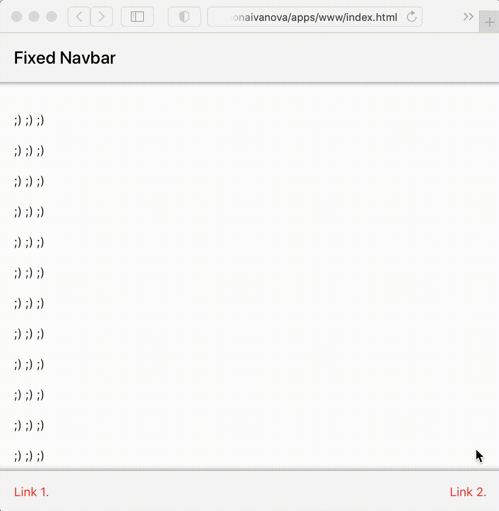
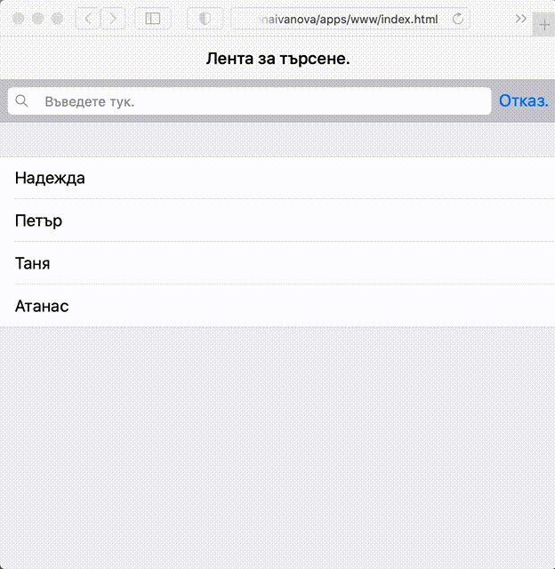
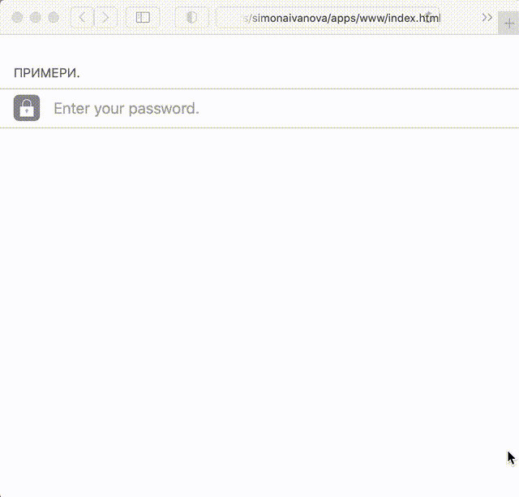
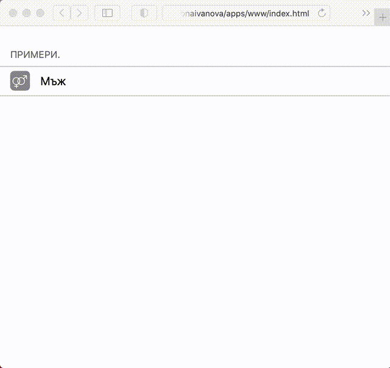
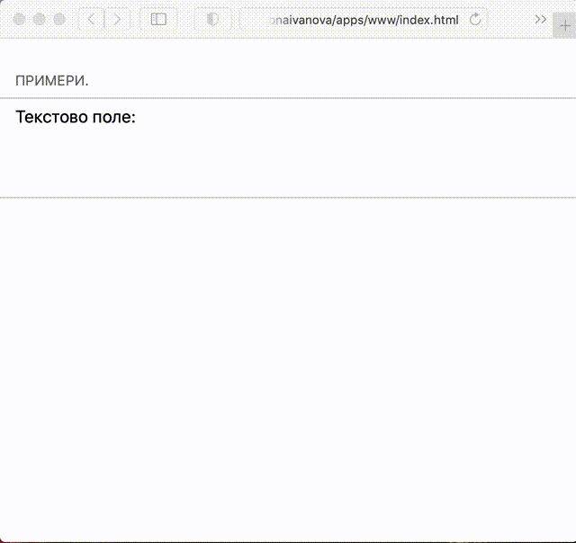
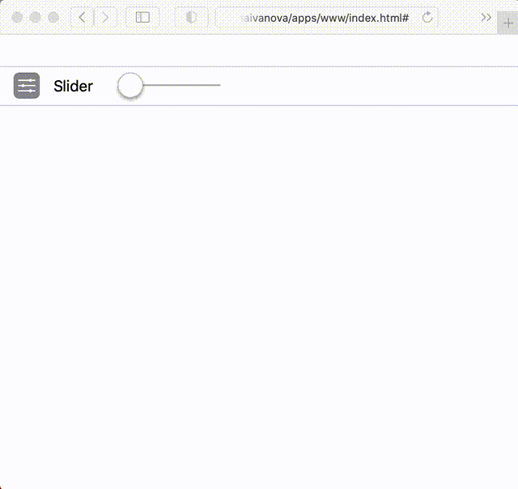

Framework7 - разработка на уеб приложения за Android и iOS
Какво е framework?
В програмирането “framework” е абстракция, при която софтуерът, предоставящ обща функционалност, може да бъде променян чрез допълнителен написан от потребителя код. Фреймуъркът (наричан още: „технологична рамка“ или „софтуерна рамка“) представлява стандартен начин за изграждане на приложения. Софтуерната рамка носи в себе си базови функционалности, с което се улеснява разработването на приложенията. Технологичните рамки могат да включват програми за поддръжка, компилатори, библиотеки, application programming interface-и (API-та), които обединяват всички различни компоненти, за да позволят разработването на проекти или системи.
Технологичните рамки притежават ключови характеристики, които ги отличават от софтуерните библиотеки. Тези характеристики са:
- Инверсията на контрол.
- Поведението по подразбиране.
- Добавянето на допълнителен код.
- Немодифицируем код.
Какво е framework7?
Framework7 е отворен проект (open source project), към който може да допринесе всеки, както и да бъде използван от всеки. Използва се за разработването на мобилни, десктоп или уеб приложения. Framework7 е създаден от Владимир Харлампиди и е представен през 2014 година.
Framework7 също така е незаменим инстумент за прототипиране, с което може да покажем работещия прототип на приложението възможно най-скоро, в случай че се наложи.
Предимства на framework7
- Framework7 ни предоставя възможността лесно да разработваме Andorid и iOS приложения.
- Framework7 ни улеснява доста при създаването на приложения, защото изисква единстено основни познания на HTML, CSS и JavaScript.
- Притежава много предварително констуирани компоненти.
- Има вградени помощни библиотеки.
- Синтаскисът му много прилича на jQuery.
- Може да се използва с други софтуерни рамки като Angular и React.
Недостатъци на framework7
- Framework7 не поддържа платформи, различни от iOS и Android.
- Изграден е около средата на Apple, и заради това е възможно темите да не изглеждат добре на устройства с Android.
Инсталиране на Framework7 CLI
Framework7 CLI(Command-Line Interface) е мощен инструмент, който се препоръчва да бъде използван, когато започнем разработването на приложения с Framework7. Използвайки го при създаването на проект, ние имаме различни варианти за избор, като например:
- Може да изберем, каква да бъде софтуерната рамка: Framework7 Core, Framework7-Vue, Framework7-React, Framework7-Svelte.
- Може да изберем, каква да бъде целевата платформа: Уеб приложение, Прогресивно Уеб Приложение, Cordova приложение.
Ето какви са и стъпките за инсталирането на Framework7 CLI и създаването на приложение:
- Инсталираме Node.js и NPM.
- Инсталираме Cordova, изпълнявайки следния команден ред (може и да не изисква командата sudo):
- Инсталираме Framework7 CLI, изпълнявайки следния команден ред (може и да не изисква командата sudo):
- За създаването на Framework7 приложение, трябва да изпълним следната команда, в директорията, в която искаме да бъде създадено приложението:
$ sudo npm install -g cordova
$ sudo npm install -g framework7-cli --unsafe-perm=true --allow-root
$ framework7 create
След изпълнението на командата следват следните въпроси:


Framework7 компоненти
Както казахме, Framework7 притежава много вградени компоненти, затова в реферата ще бъдат разгледани само част от тях.
Бутони
Framework7 предлага куп готови за използване бутони. Различните видове бутони могат бъдат получени от допълнителни класове модификатори и техните комбинации.
Имаме следните класове за модифициране на бутони:
| Клас | Описание |
|---|---|
| button-fill | Бутонът е оцветен |
| button-fill-ios | Бутонът е оцветен само за iOS |
| button-fill-md | Бутонът е оцветен само за MD |
| button-fill-aurora | Бутонът е оцветен само за Aurora |
| button-round | Заоблен бутон |
| button-round-ios | Заоблен бутон само за iOS |
| button-round-md | Заоблен бутон само за MD |
| button-round-aurora | Заоблен бутон само за Aurora |
| button-small | Малък бутон |
| button-small-ios | Малък бутон само за iOS |
| button-small-md | Малък бутон само за MD |
| button-small-aurora | Малък бутон само за Aurora |
| button-large | Голям бутон |
| button-large-ios | Голям бутон само за iOS |
| button-large-md | Голям бутон само за MD |
| button-large-aurora | Голям бутон само за Aurora |
| button-raised | Изпъкнал бутон |
| button-raised-ios | Изпъкнал бутон само за iOS |
| button-raised-md | Изпъкнал бутон само за MD |
| button-raised-aurora | Изпъкнал бутон само за Aurora |
| button-outline | Бутон с контур |
| button-outline-ios | Бутон с контур само за iOS |
| button-outline-md | Бутон с контур само за MD |
| button-outline-aurora | Бутон с контур само за Aurora |
| button-active | Бутон, който е избран/активен. Използва се вътре в segment |
| color-[color] | Добавяне на цвят на бутона, където [color] е някой допустим цвят |
Сегментен контрол
Сегментният контрол е линеен набор от два или повече сегмента(бутони), всеки от който функционира като взаимно изключващ се бутон. В рамките на контрола всички бутони са с еднаква ширина.
Примери за различните видове бутони:
- Обикновен бутон в червен цвят

Фиг. 8. Екранна снимка. - Избран/Активен бутон в жълт цвят

Фиг. 9. Екранна снимка. - Заоблен бутон оцветен в оранжев цвят

Фиг. 10. Екранна снимка. - Голям бутон оцветен в цвят лайм

Фиг. 11. Екранна снимка. - Малък бутон оцветен в червен цвят

Фиг. 12. Екранна снимка. - Жълт бутон с контур

Фиг. 13. Екранна снимка. - Изпъкнал, заоблен бутон в оранжев цвят

Фиг. 14. Екранна снимка. - Сегментирани бутони (бутони на ред)

Фиг. 15. Екранна снимка.
Ето и как изглеждат визуално създадените по-горния начин бутони:

Оформления
Framework7 ни предоставя различни видове оформления. Поддържа три вида Navbar/Toolbar оформления.
| Вид оформление | Описание |
|---|---|
| Статично оформление | Лентата с интрументи и навигационните елементи не са постоянно видими. Те изчезват, когато скролваме из съдържанието на страницата. |
| Фиксирано оформление | Лентата с интрументи и навигационните елементи са видими постоянно, т.е не изчечват когато скорлваме из съдържанието на страницата. |
| Цялостно (Through) оформление | Това е най-широко използваният вид оформление. При него лентата с интрументи и навигационните елементи остават еднакви за всички страници в един изглед. |
Примери, за първите два вида оформления:
- Статично оформление:
- Фиксирано оформление - разликата със статичното оформление, кактo ще видите в примера, е че тук лентата с интрименти и навигационните елементи не се намират в класа page-content, а са наследници на класа page.



Фиг. 20. Екранна снимка.
Демонстрация на примера.
Разликате между видовете оформления се изразява в това, в кой клас сa вложени лентата с интрументи и навигационните елементи.

Лента за търсене
Лентата за търсене позволява на потребителя да търси конкретен елемент в елементите на списък. Търсенето на елемента става с помощта на класа searchbar. Ето и какво е оформлението на компонента "Лента за търсене":

където:
div class="searchbar-input-wrap" обхваща полето за търсене и бутона за изчистване.
inpit type="search" полето за търсене.
i class="searchbar-icon" лупата, която се намира в началото на полето за търсене.
span class="input-clear-button"бутон за изчистване на въведения за търсене елемент и нулиране на резултатите от търсенете.
span class="searchbar-disable-button" бутонът "Отказ" в лентата за търсене, който ще деактивира ленатата за търсене,
ще нулира резултатите от търсенете и ще изчисти полето за търсене.
Имаме следните видове ленти за търсене:
- Фиксирана лента за търсене.
- Статична лента за търсене.
- Разшираема лента за търсене.
- Вградена лента за търсене.
Aналогично както при оформленията, тя е винаги видима и не изчезва, когато скролваме из съдържанието на страницата. В този случай тя може да бъде поставена по един от следните начини:


Аналогично както при статичното оформление.

Тя е скрита, когато е деактивирана, а след като я активираме става видима. Оформлението и е строго, и затова трябва да бъде поставена вътре в navbar.


Пример за лента за търсене:


Фиг. 29. Екранна снимка.
Демонстрация на примера.
Поле за въвеждане
Класът item-input е предназначен за въвеждане от потребителя. Ето какво е оформлението на полето за въвеждане:


Поддържат се следните типове за въвеждане от потребителя:
- За въвеждането на текст - text,password,email,tel,url,data,number,datetime-local.
Пример: - За въвеждане на стойност измежду дадени такива (например за пол да се избере мъж/жена).
Пример: - За въвеждане в текстово поле.
Пример: - За избиране на обхват чрез преплъзване.
Пример:


Фиг. 33. Екранна снимка.
Демонстрация на примера.


Фиг. 35. Екранна снимка.
Демонстрация на примера.


Фиг. 37. Екранна снимка.
Демонстрация на примера.


Фиг. 39. Екранна снимка.
Демонстрация на примера.
Framework7 поддържа HTML5 валидиране въз основа на свойството за въвеждане на валидни данни. Проверкaта за валидни данни зависи от типа на въведената стойност.
За да активираме проверката трябва да добавим атрибутите required и validate при въвеждането на стойноста.
Имаме възможността да добавим и собствено правило за проверка на валидни данни, като за целта трябва да добавим допълнителния атрибут pattern.
Нека видим няколко примера:

Източници
- https://en.wikipedia.org/wiki/Software_framework, последно посетено на 16.11.2020.
- https://framework7.io/docs/introduction.html, последно посетено на 19.12.2020.
- https://www.academia.edu/33673842/Framework7_tutorial, последно посетено на 19.12.2020.
- https://framework7.io/cli/, последно посетено на 19.12.2020.
- https://framework7.io/cli/installation.html, последно посетено на 19.12.2020.
- https://framework7.io/cli/create-app.html, последно посетено на 19.12.2020.
- https://framework7.io/docs/button.html, последно посетено на 19.12.2020.
- https://www.tutorialspoint.com/framework7/framework7_layouts.htm, последно посетено на 19.12.2020.
- https://v1.framework7.io/docs/navbar-toolbar-layouts.html, последно посетено на 19.12.2020.
- https://www.tutorialspoint.com/framework7/static_layout.htm, последно посетено на 19.12.2020.
- https://www.tutorialspoint.com/framework7/fixed_layout.htm, последно посетено на 19.12.2020.
- https://www.tutorialspoint.com/framework7/through_layout.htm, последно посетено на 19.12.2020.
- https://framework7.io/docs/searchbar.html, последно посетено на 19.12.2020.
- https://framework7.io/docs/inputs.html#validation, последно посетено на 19.12.2020.
Фигури
- Фигури, които са екранни снимки: 1, 2, 3, 4, 5, 6, 7, 8, 9, 10, 11, 12, 13, 14, 15, 16, 17, 18, 19, 20, 28, 29, 30, 31, 32, 33, 34, 35, 36, 37, 38, 39.
- Фигура от източник 9: 21
- Фигури от източник 13: 22, 23, 24, 25, 26, 27.
- Фигура от източник 14: 40.
За автора
Име: Симона Иванова Иванова.
Факултетен номер: 81455.
Специалност: Компютърни науки; Курс: 4; Поток: 1; Група: 1.